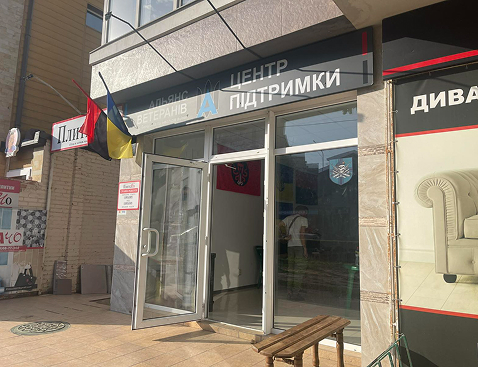

- item
- item
- item
- item
- item
- item

"Альянс Ветеранів" — це енергійна громадська організація Чорноморської громади Одеської області, яка допомагає ветеранам, військовим і їхнім родинам. Ми створюємо унікальні проєкти, будуємо партнерства й надаємо правову, психологічну та реабілітаційну підтримку. Разом ми об’єднуємо громаду, даруємо турботу та надихаємо на нові досягнення!
Корисні проєкти партнерів
Правовий навігатор
Створено командою Правозахисного центру “Принцип”. Інструмент допомагає військовим, ветеранам і їхнім родинам у базових юридичних питаннях, під час лікування поранень та з пошуком контактів.
Навігатор тутПрограма реінтеграції ветеранів IREX
Програма реінтеграції ветеранів IREX має на меті підвищити якість і доступність послуг для ветеранів України, щоб підтримати їх під час переходу від військової служби до цивільного життя та полегшити процес адаптації.
IREX тутЮридична Сотня
надання безоплатної правової допомоги, інформування про права та гарантій військових та ветеранів, глибока та всебічна юридична аналітика у сфері ветеранських справ та адвокатування системних змін у законодавстві.
Юридична Сотня тут